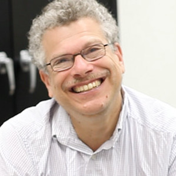
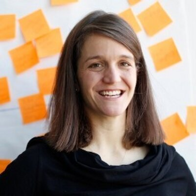
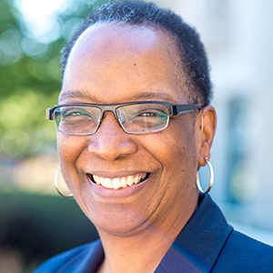
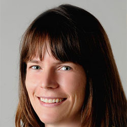
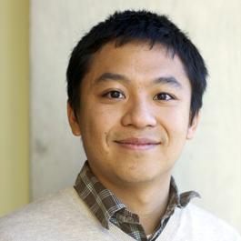
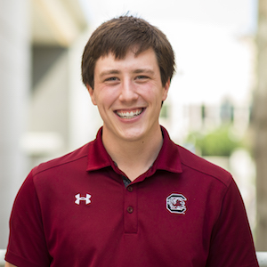
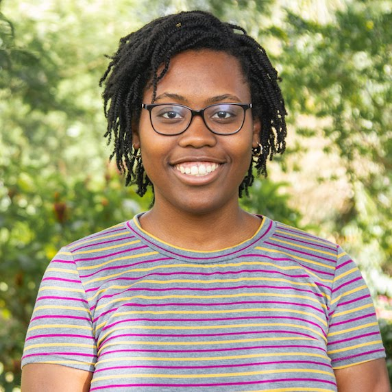
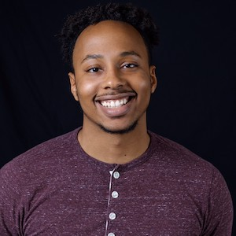

Overview
The Joint PhD Program in Computer Science and Learning Sciences builds on enduring and growing connections between research on learning and computation. Rapid technological advances continue to create new and exciting ways to both understand and support learning in all settings and in all stages of life. This program is intended for students with an interest in both fields who would otherwise be forced to choose one area or the other.
Areas of Interest
The possible areas of study are broad and draw from the diverse expertise of affiliated faculty. However, all research must have clear relevance to both Computer Science and Learning Sciences. Example areas of interest include educational data mining; computational modeling as a means to understand complex scientific phenomena; adaptive technology for learning; equity issues in computing; intelligent tutoring systems; and interaction design to support learning.
- Interaction Design
- Computational modeling and simulations
- Artificial Intelligence
- Programming language design
- Machine Learning
- Crowd Sourcing
- Social Computing
- Cognitive Modeling
- Learning Analytics
- Game Design
- Educational Data Mining
- Computer Science Education
- Visualization
- Learning at Scale
- Tangible and Ubiquitous Computing
- Robotics
Learn more about our program by emailing Allison Manley at allison.manley@northwestern.edu.
People
Core Faculty
- 
Uri Wilensky
Co-Director

Michael Horn
Co-Director
-
Jeannette Colyvas
Steering Committee
-
Eleanor O’Rourke
Steering Committee
-
Chris Riesbeck
Steering Committee
-
Bruce Sherin
Steering Committee
-
Ken Forbus
-
Marcelo Worsley
Affiliated Faculty
-
Larry Birnbaum
-
Matt Easterday
-
Robby Findler
- 
Liz Gerber
-
Darren Gergle
-
Jason Hartline
- 
Paula Hooper
-
Ian Horswill
-
Jessica Hullman
-
Matthew Kay
-
Jolie Matthews
-
Nichole Pinkard
-
Anne Marie Piper
-
Sara Owsley Sood
-
Reed Stevens
-
Sepehr Vakil
- 
Sarah Van Wart
- 
Haoqi Zhang
Students
- 
Connor Bain

Matt Brucker
-
John Chen
-
Jamie Gorson
-
Maryam Hedayati
-
Garrett Hedman
-
Ayse Hunt
-
Jacob Kelter
- 
Stephanie Jones
-
Nick LaGrassa
-
Natalie Melo
- 
Michael Smith
Upcoming Events
Past Events
- CT Learning in Formal Learning Environments to Preserve the Engagement and Agency of Informal Learning Environments
with Diana Franklin - CS + LS Colloqium - Nov. 14, 2019 12:30pm to 2pm, Annenberg Hall Rm. 303
- First CS+LS Symposium with renowned scholars from around the world - Northwestern University - April 29-30. For more details, visit here.
- Designing for Irrational Curiosity with Mike Eisenberg - Joint CS + LS & CS Colloquium - December 4, 2017
- Bootstrap: What it Is, How it Succeeds, and Where it Struggles with Shriram Krishnamurthi - CS + X Colloquium - July 9, 2018
Admissions
Deadline: December 15
Applications for the PhD program are accepted for fall quarter matriculation only.
Application Materials
All application documents are required to be submitted electronically. We do not accept paper copies of application documents. The following application documents are required:
- Graduate School online application
- Resume or CV
- GRE Scores (Due to the COVID-19 pandemic GRE scores for this year will be encouraged but not required.)
- TOEFL Scores (international applicants only)
- Statement of Purpose
- Academic Transcript
- Two to three letters of recommendation
- Writing Sample
- Application fee of $95 submitted online
Writing Sample
The writing sample should be academic in nature and provide evidence of your ability to conduct scholarly inquiry. There is no length limit, but the file size must not exceed 2MB in order to upload. Students typcially submit documents such as research papers, honors theses, and course papers.
Academic Transcript
Copies of unofficial transcripts may be submitted during the application process. However, official transcripts are required of all admitted students before the start of the first quarter.
Find out more about post-secondary official transcripts
GRE Scores
GRE scores must be sent directly from ETS and must be no older than five years at time of matriculation.
Due to the COVID-19 pandemic GRE scores for this year will be encouraged but not required.
More information about GRE scores (send scores via code #1565)
Test of English as a Foreign Language (TOEFL)
English proficiency scores are required of all international applicants. If you are have earned a graduate or undergraduate degree from an accredited institution of higher education where the primary language of instruction is English, you are not required to submit a TOEFL score. For the TOEFL, you must score 600 or higher on the paper-based test, 250 or higher on the computer-based test, 100 or higher on the internet based test. For the IELTS, you must receive a score of 7.0 or higher.
Learn more about English proficiency scores for non-native English speakers
Applicants interested in the PhD program are encouraged to contact program assistant Megan Redfearn at any time.
Contact Us
Questions about the program may be directed to the program assistant:
Northwestern University
c/o Megan Redfearn, PhD Program Assistant
2120 Campus Drive
Evanston, IL 60208
m-redfearn@northwestern.edu
847-467-6519